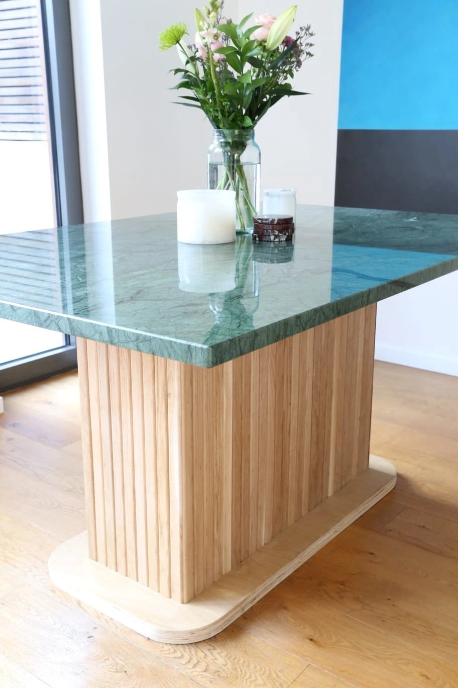
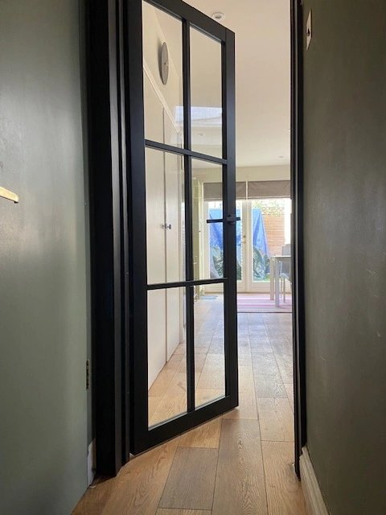
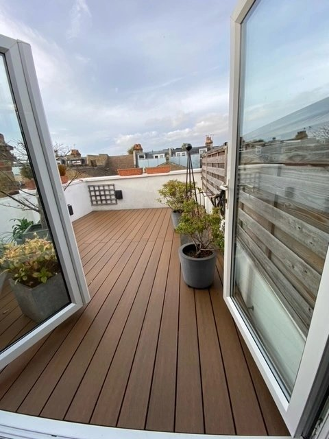

Our services
Crafted for the way
you live.
From made-to-measure storage to the finishing details. Carpentry and bespoke furniture for homes across South West London.

Fitted furniture & storage
Furniture designed to belong in your room. Make use of an alcove, bring order to a bedroom, or turn an overlooked corner into practical storage.
- Alcove units & media walls
- Fitted wardrobes & understairs storage
- Window seats & home-office desks

Bespoke furniture
Individual pieces built around your ideas and the way you live. From a dining table designed for an existing marble top to a distinctive bathroom vanity, the starting point is personal.
- Custom tables & desks
- Bathroom vanity cabinetry
- Shelving & display furniture

Interior carpentry
The details that make a home feel finished. We undertake carpentry throughout the home, from fitting doors and floors to panelling and kitchen installation.
- Door hanging, handles & locks
- Skirting, architraves & wall panelling
- Wood & laminate flooring · kitchen fitting

Decking & exterior work
Practical carpentry for the spaces outside your home, including deck replacement and timber repairs. Talk to us about the space, its condition and the finish you have in mind.
- Timber & composite decking
- Deck replacement
- Sash-window repairs
The smaller details
A little help
around the home.
We also help with hanging shelves and mirrors, fitting handrails, shutters and blinds, and installing curtain rails. Get in touch to discuss the work you need.
Based in Southfields, serving South West London, including Wimbledon, Putney, Fulham, Richmond, Clapham and the surrounding areas.
Call 07455 513735